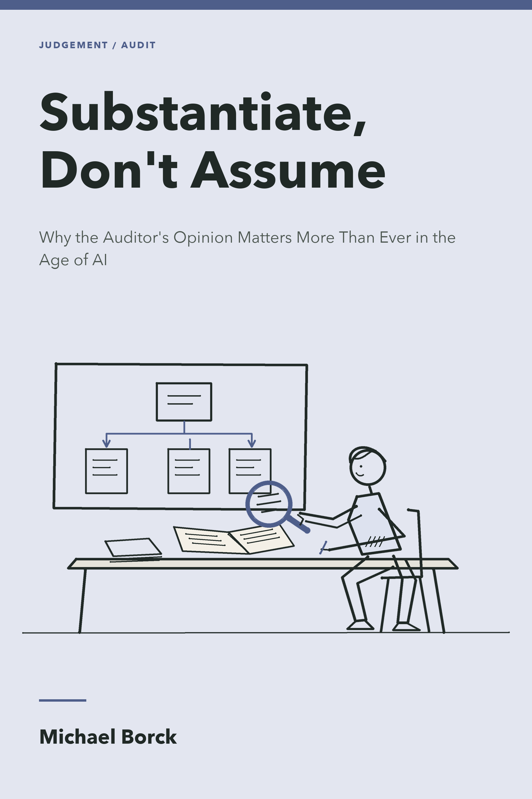

Substantiate, Don’t Assume
Why the Auditor’s Opinion Matters More Than Ever in the Age of AI
Introduction: The Audit Mindset

Every organisation claims its information is secure. The auditor’s job is to find out whether that claim survives contact with evidence.
The polished policy and the unpatched server
Visit a company’s security page and you will find confident assertions: certification, encryption, careful handling of customer data. Those claims might be well supported. An auditor’s task is to establish what they mean, what they cover, and what evidence supports them.
This book follows Tessera, a fictional Perth software company seeking ISO/IEC 27001 certification. Its CTO expects a straightforward sign-off. You have been asked for a readiness assessment. Neither the CTO’s confidence nor your suspicion settles the result.
What information security auditing actually is
Information security auditing systematically evaluates evidence against agreed criteria. Those criteria may include a management-system standard, applicable law, contractual promises and the organisation’s own policies. Authorised penetration testing and continuous monitoring can contribute evidence; they serve different purposes from an audit.
An opinion brings the findings together into a bounded judgement. It names the subject, criteria, period, methods and limitations. A readiness assessment advises an organisation preparing for certification. It does not award a certificate or replace the certification body’s independent decision.
Trust, but verify
Professional scepticism means testing a claim fairly. Ask what would support it and what would contradict it. A nervous engineer may operate a sound control; a confident executive may have good evidence. Demeanour helps you plan a conversation, but does not determine your finding.
A productive engagement needs cooperation. Agree access and timing, explain requests, protect confidential material and give people an opportunity to correct factual errors. Independence still requires you to report an unwelcome result when the evidence supports it.
A snapshot, not a guarantee
An opinion provides bounded assurance about its subject and period. Sampling, incomplete records and changing systems limit what it can establish. It guarantees neither the past nor the future. Another competent reviewer should be able to follow your reasoning and identify where a different judgement could be defensible.
Substantiate, don’t assume
A policy is evidence of a stated requirement or design. An operating record can support a claim about performance over time. Observation can show a control running at a particular moment. Each has limits; none becomes universally reliable merely because you collected it yourself.
Throughout the book, keep this trail in your working papers:
criterion → evidence → test → result → finding → action → retest → opinion.
“Insufficient evidence” is a legitimate result. So is clearing a concern after a test passes. You are not rewarded for producing the greatest number of failures.
The auditor’s work with AI
AI can help draft procedures, suggest questions and compare a finding with its evidence. Performance varies with the model, task and inputs. Fluent output can contain unsupported mappings, mistaken calculations or invented closure claims.
Use the drafter-to-evaluator loop when it helps: define the task, supply permitted inputs, check the draft against the record, and retain the corrections and limits. You remain responsible for the work. There is no requirement to find a model error if its answer is sound.
Use only the explicitly fictional book exercises with unapproved tools. For real engagements, obtain authority for the tool, data and processing arrangement before use. Enterprise branding or local hosting alone does not establish confidentiality, retention, access control or legal compliance. Do not upload client evidence, credentials, personal data or licensed standards without the necessary permissions.
Who this book is for
This is a first audit engagement for readers with basic security knowledge: accounts and permissions, logs, backups, and the idea that a cloud provider and its customer have different responsibilities. The book explains technical terms when they become relevant. No CISA credential, purchased lab or prior reading of the companion books is required.
By the end, you should be able to define a bounded engagement, select criteria, test supplied records, distinguish an observed exception rate from future incident likelihood, write a supported finding and defend a readiness conclusion.
This is teaching material, not legal advice or a replacement for authorised copies of standards. The book supplies original case criteria so that you can complete the exercises without purchasing a standard. A real engagement requires its agreed editions and suitably qualified review.
How this book works
Twelve chapters retain the engagement’s progression from Why? to Conclude?.
| Act | Chapters | Observable outcome |
|---|---|---|
| I · Engage | 1–6 | A mandate, criteria map and test programme that distinguish design evidence from untested operating claims |
| II · Prove | 7–12 | Reproducible working papers, a finding and closure ledger, and an opinion with explicit limitations |
The act break stages the release of information for learning. In practice, interviews, document review and operational testing overlap. Remote examination of logs can be operating-effectiveness work. “Full access” never means unlimited authority or complete assurance.
The Evidence Locker is your cumulative file. Use paper, a text document or a spreadsheet. Each chapter supplies one timed task and a checkable output. The case pack contains the fixed inputs; the answer checks should be read after an attempt. No AI account, code execution or live interview is needed for the core route.
The fixed case and the companion site
The canonical worked engagement is SDA-2026.1, a book-only Tessera teaching scenario, with a final evidence cutoff of 30 June 2026. The appendix supplies original synthetic records, not exports or quotations from the live site. Its dates, contracts and test populations govern this book’s answers. The case is deliberately small and cannot establish an actual company’s conformance.
Tessera’s live companion site remains an optional interview and discovery environment. It may describe a different date, certification status, contract or recovery target. Treat it as a separate exercise: record the page, retrieval date and your evidence, and do not splice changing website facts into the fixed case. Chatbot replies are simulated testimony, not verified records. Availability and answers can vary.
If you find drift within this book, report the edition, evidence ID and conflicting passages through the source repository. No site content needs to be copied to complete the exercises.
The companion book
Conversation, Not Delegation develops the craft of working with AI. It is optional further reading. This book supplies its own method and practice inputs.
The series trunk is Conversation, Not Delegation for method and The Human Edge for professional judgement. This book is the branch for assurance and audit.
Conventions used in this book
🗂️ Tessera Case marks a worked example. 🗄️ Evidence Locker identifies the task and the output to retain. 🤖 AI Field Note shows a bounded illustrative draft and its evaluation; it is not a transcript of a measured model run. 🔍 Auditing AI applies assurance methods to AI-supported systems.
Three chapters retain extended Take it to the AI activities. Other chapters use inspection, calculation, comparison or short written decisions. All have a solo route. Case dialogue and revised third-person audit vignettes are fictional teaching examples.
How this book was written
AI tools supported drafting and revision. The author is responsible for checking and approving the published work. Source tests can catch arithmetic and continuity errors, but do not replace expert review or an unfamiliar reader’s attempt.
Edition and review status
All twelve chapters are drafted. This revision targets ISO/IEC 27001:2022 with its 2024 amendment and NIST CSF 2.0. Guidance editions and primary references are dated in the source guide. The online edition may be updated separately from downloaded or printed copies; check their edition information. KDP publication, human proofing and fresh-reader testing are separate release gates.